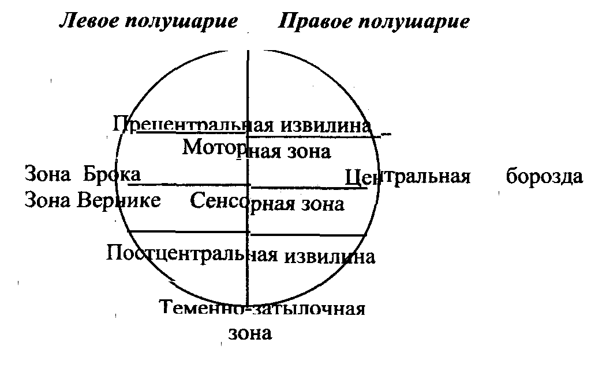
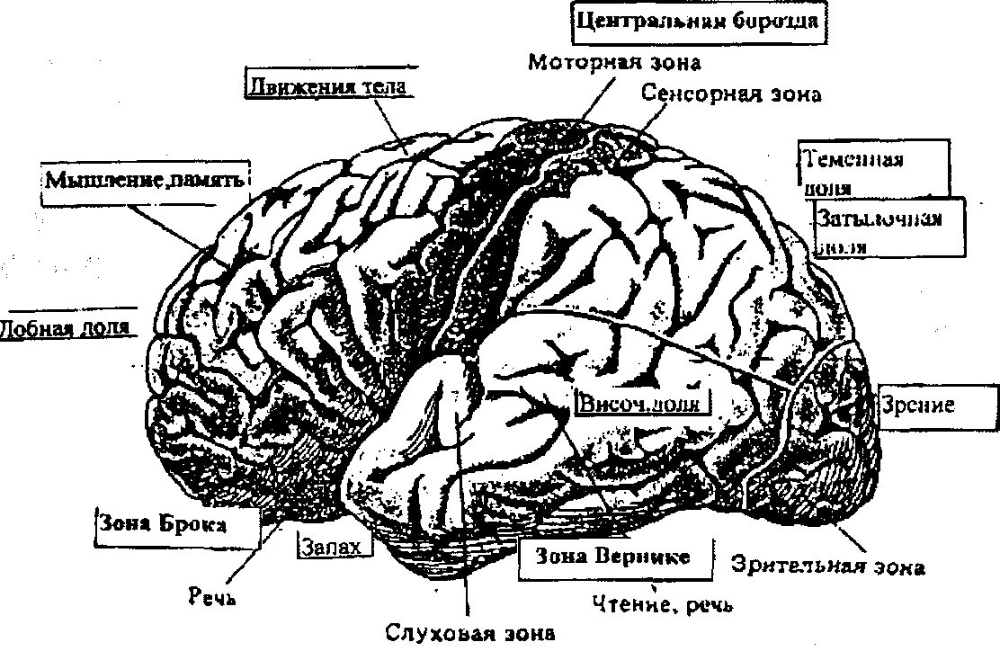
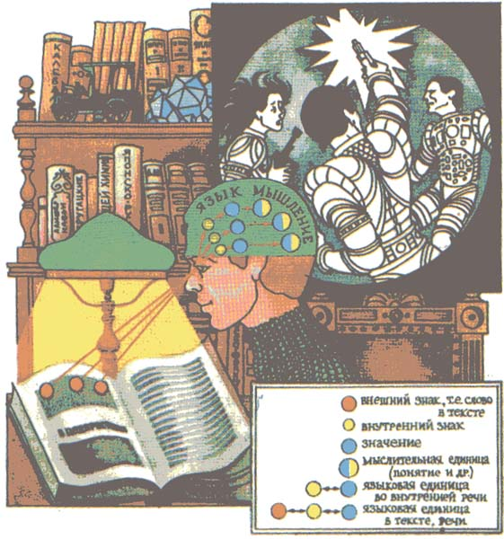

ЯЗЫК И МЫШЛЕНИЕ
3. Язык и логика: единицы и категории.
6. Гипотеза языковой относительности.
7. Концептуальная и языковая картины мира.
Время от времени человечество делает открытия такой глобальной масштабности, что они приводят к кардинальному пересмотру устоявшихся представлений, усвоению нового образа мышления (например, открытие значимости экологической сферы).
Сейчас мы вплотную подошли к подобному по своей универсальности и значимости событию – открытию психосферы. Как и все вновь вводимые понятия, он с трудом поддается определению. Вот как пишет об этом явлении языковед В. А. Звегинцев: “Психосфера является обязательной для человека средой, в которой протекает его психическая, интеллектуальная, духовная (культурная) жизнь”. Это “естественное образование, реальные проявления которого воплощают в себе всю совокупность свойств духовной деятельности человеческих сообществ в определенный период их существования... Поскольку наиболее полное выражение она находит в языке…, постольку и представляется наиболее удобным подходить к исследованию существа психосферы со стороны языка”.
Наиболее важными составляющими психосферы являются мышление и язык. Их взаимосвязь мы и рассмотрим.
Связи языка и мышления являются важнейшим аспектом лингвистики, образуют особую область лингвистических знаний. Раздел общего языкознания, который изучает взаимоотношения языка и мышления, называют менталингвистика.
Первично существует реальный мир, и он обобщенно и опосредованно (c помощью специальных средств) отражается в сознании человека. Сознанием называют всю совокупность психической деятельности, включая интеллект, чувства и волю человека.
Сознание = мышление + чувства + воля
В познании мира, в становлении личности каждый из этих компонентов сознания важен. Но особую роль играет мышление - способностью мыслить и рассуждать, делать умозаключения и давать оценки.
“Мышление – высшая форма активного отражения объективной реальности, целенаправленное, опосредованное и обобщенное познание существенных связей и отношений предметов и явлений” (Философский энциклопедический словарь).
Существует особая наука - логика (от греч. 1оgos - разум, мышление, речь, слово), которая изучает мышление, его законы и виды. Благодаря ее данным мы различаем три основных вида мышления (их также считают этапами развития мышления): предметное (практическое, практически-действенное), наглядное (наглядно-образное) и словесно-логическое.
Также как и общение, мышление может быть вербальным и невербальным. Невербальное мышление осуществляется не с помощью слов, а другими средствами. Предметным мышление мы руководствуемся в массе бытовых ситуаций, от завязывания шнурков до отпирания двери. Невербальной является мыслительная деятельность при решении творческих задач технического характера (например, связанных с пространственной координацией и движением частей механизма). Решение подобных задач обычно не протекает в формах внутренней (а тем более, внешней) речи. Это особое “техническое”, или “инженерное” мышление. Близко к этому мышление шахматиста. Особый тип наглядно-образного мышления характерен для творчества живописца, скульптора, композитора. Наглядно-образное мышление использует символы (математики, физики, химии) или наглядно-чувственные образы. Словесно-логическое, или языковое мышление, является важнейшим видом человеческого мышления.
Исследователи также различают мышление чувственное и абстрактное. Чувственное мышление проявляется в следующих формах:
а) ощущение - отражение предмета, его отдельных свойств;
б) восприятие - отражение предмета как совокупности признаков;
в) представление - чувственно-наглядный образ предмета.
Абстрактное мышление реализуется в понятиях и суждениях.
Язык выполняет ничем не заменимую функцию в процессе познания мира: от живого созерцания к абстрактному мышлению и от него к практике. На основании ощущений у человека складывается представление о предмете, на основе представления рождается понятие как обобщенный образ предмета, обозначенный словом; связь понятий рождает суждение, выраженное предложением.
Таким образом, мышление человека – это сложная совокупность различных видов мыслительной деятельности, постоянно сменяющих и дополняющих друг друга и нередко выступающих в синтезе, во взаимном переплетении. Словесно-логическое, вербальное мышление, является, таким образом, лишь одним из компонентов человеческого мышления, хотя и важнейшим.
Как же соотносятся мышление и язык, как они связаны и чем различаются?
1. Как связаны язык и мышление?
Соотношение языка и мышления – проблема непростая, что обусловлено сложностью ее составляющих. Язык и мышление – атрибуты человека, поэтому они сочетают в себе:
а) социальное (как продукты социума);
б) биологическое (работа речевого аппарата, мозга);
в) психологическое (языковые значения хранятся в памяти, мозг руководит говорением и пониманием сказанного).
В решении проблемы связи языка и мышления лингвисты, логики, философы колебались между двумя полярными подходами:
Суть первого подхода - установление связи и даже неразрывности языка и мышления: одно без другого не существует.
Первыми к изучению проблемы соотношения языка и мышления обратились античные философы. Они исследовали язык не ради его самого, а для познания законов бытия и мышления. Древние греки использовали понятие “1оgos”, в котором слово и мысль образуют глубочайшее единство. В определении Платона, “мысль и речь одно и то же”. Известный философ А.Ф. Лосев пишет: “Логос – это “и мысль, адекватно выраженная в слове и потому неотделимая от него”, и “слово, адекватно выражающее какую-нибудь мысль и потому от нее не отделимое”.
В начале XIX века
Вильгельм фон Гумбольдт считал язык связующим звеном между миром и человеком. Он писал: “Язык, выступая в качестве посредника между человеком и внешними объектами, закрепляет за звуками мир мыслей”. Однако, по мнению Гумбольдта, между языком и мышлением существует единство, но не тождество. Определяющим в этом единстве является мышление. “Язык пробуждается в человеке потребностью мысли”. Но и “мышление не просто зависит от языка вообще, – оно до известной степени обусловлено также каждым отдельным языком”. Гумбольдт ратовал за соединение языкознания с человековедением и писал: “Язык есть орган, образующий мысль… Интеллектуальная деятельность и язык представляют собой единое целое. В силу необходимости мышление всегда связано со звуками языка; иначе мысль не сможет достичь отчетливости и связности, представление не сможет стать понятием”. Развивая этот тезис, Гумбольдт говорил, что язык народа - его дух, дух народа - это его язык.В 1884 году философ и просветитель Иоганн Готфрид Гердер писал: “Язык - это печать нашего разума, благодаря которой разум обретает видимый облик и передается из поколения в поколение”.
Другой немецкий лингвист Август Шлейхер считал, что мышление и язык столь же тождественны, как содержание и форма.
Филолог Макс Мюллер высказывал эту мысль в крайней форме: “Как мы знаем, что небо существует и что оно голубое? Знали бы мы небо, если бы не было для него названия?... Язык и мышление два названия одной и той же вещи”.
Фердинанд де Соссюр (1957-1913), швейцарский лингвист, в поддержку тесного единства языка и мышления приводил образное сравнение: “Мышление – туманность, где ничто не разграничено без языка”. При этом язык – форма, а мышление – ее содержание. Соссюр писал: “Язык – посредник между мышление и звуком. Язык можно сравнить с листом бумаги: мысль – лицевая сторона, а звук – оборотная. Нельзя разрезать лицевую сторону, не разрезав оборотную. В языке нельзя отделить ни мышление (семантику) от звука, ни звук от мышления. Этого можно достичь лишь путем абстракции”.
В середине XIX века большой вклад в решение этого вопроса внес замечательный русский филолог Александр Афанасьевич Потебня. В книге “Мысль и язык” он вслед за Гумбольдтом подчеркивал: “Язык есть средство не выражать уже готовую мысль, а создавать ее”.
.
В ХХ веке лингвисты продолжают уточнять соотношение данных понятий. Так американский лингвист Эдуард Сепир пишет: “Границы языка и мышления в строгом смысле не совпадают. В лучшем случае язык можно считать лишь внешней гранью мышления на наивысшем, наиболее обобщенном уровне символического выражения”.Сегодня среди исследований по этой проблеме выделяют работы психологов Л. С. Выготского, Н. И. Жинкина и лингвиста Б. А. Серебренникова.
Выготский Л. С. писал: “Речь по своему строению не представляет собой простого зеркального отражения строения мысли. Поэтому она не может надеваться на мысль, как готовое платье. Речь не служит выражением готовой мысли. Мысль, превращаясь в речь, перестраивается и видоизменяется. Мысль не столько выражается в слове, сколько совершается в нем”. Эту же мысль высказал великий физиолог И. И. Павлов: “Язык и выражает, и формирует мысль”.
Таким образом, язык часто определяют как орудие, инструмент мышления и говорят о единстве языка и мышления.
Вторая, противоположная точка зрения предполагает полное разделение языка и мышления. Г. Штейнталь писал: “Отношение логического и языкового – это отношение красного и круга (т.е. между языком и мышлением нет связи!). Мышление – это экстралингвистическое явление, находящееся за пределами языка. Язык же уникален, специфичен для каждого народа. А формы мышления общечеловечны”
.Многие ученые считают, что мышление, особенно творческое мышление - это самостоятельное явление и оно вполне возможно без словесного выражения. Норберт Винер, Альберт
Эйнштейн, Фрэнсис Гальтон и другие исследователи признаются, что используют в процессе мышления не слова или математические знаки, а расплывчатые образы, игру ассоциаций и только затем воплощают результат в слова. Творить без помощи словесного языка могут композиторы, художники, актеры. Например, композитор Ю. А. Шапорин утратил способность говорить и понимать, но мог сочинять музыку, то есть, продолжал мыслить. У него сохранился конструктивный, образный тип мышления.Русско-американский лингвист
Роман Якобсон объясняет эти факты так: знаки - необходимая поддержка для мысли, но внутренняя мысль, особенно когда это мысль творческая, охотно использует другие системы знаков (неречевые), более гибкие, среди которых встречаются условные общепринятые и индивидуальные (как постоянные, так и эпизодические).Некоторые исследователи (Д.
Миллер, Ю. Галантер, К. Прибрам) считают, что у нас есть очень отчетливое предвосхищение того, что мы собираемся сказать, у нас есть план предложения, и когда мы формулируем его, мы имеем относительно ясное представление о том, что мы собираемся сказать. Это значит, что план предложения осуществляется не на базе слов. Фрагментарность и свернутость редуцированной речи - следствие преобладания в этот момент в мышлении несловесных форм.Другим доказательством самодостаточности языка и мышления может стать тот факт, что многим людям удается скрывать скудость своих мыслей за обилием слов. “Бессодержательную речь всегда легко в слова облечь”, - писал И. В. Гете.
Таким образом, каждая из противоположных точек зрения имеет под собой достаточные основания. Истина, скорее всего, лежит посередине, т.е. мышление и словесный язык тесно связаны, но в ряде случаев и в некоторых сферах мышление не нуждается в словах.
2. Чем различаются язык и мышление?
Несмотря на очевидную связь, язык и мышление отличаются друг от друга:
Первое отличие заключено в назначении. Мышление есть функция сложно устроенного мозга, сущность которой и заключается в обобщении и отражении реально существующего мира. Целью мышления является получение новых знаний, их систематизация. А язык всего лишь обслуживает познавательную деятельность, помогая оформить мысли, закрепить знания, передать их. Иначе говоря, мы мыслим, чтобы узнать и понять, говорим же для того, чтобы передать наши мысли, чувства, пожелания.
Второе отличие в строении единиц и в законах развития, в особенностях языковой и логической формы. Основу мышления составляет логический строй мысли, правила оперирования понятиями и суждениями для достижения истины. Логические законы и формы – общечеловеческие. Основу языка составляют звуки, слова, словосочетания и предложения; строение предложения и строение мысли не только не тождественны, но даже не всегда соответствуют один другому. Языковые правила словоизменения, построения предложений и законы развития весьма разнообразны в языках мира. Более того, даже в одном языке есть синонимические средства передачи одной мысли.
Третье отличие связано с природой
явлений: мышление имеет идеальную природу, а язык – это явление физическое, материальное. Язык материальная, практическая сторона сознания, в частности мышления. Язык материален в том смысле, что все его единицы (слова, сочетания слов, морфемы и т.д.) облечены в звуки. Мышление же идеально, хотя и зависимо от своего материального носителя и источника - мозга. Мысль не имеет материи: массы, протяженности, вкуса, запаха, цвета и т.п.“На духе с самого начала лежит проклятие – быть “отягощенным” материей, которая выступает здесь в виде движущихся слоев воздуха, звуков – словом, в виде языка”, - писал Фридрих Энгельс.
1. Работа головного мозга
Органом мышления считается головной мозг. Поскольку мышление связано с языком, “география” мозга представляет немалый интерес для выяснения того, какие зоны отвечают за речь человека.
Левое и правое полушария головного мозга имеют различную специализацию, то есть разные функции, что можно определить как функциональную асимметрию коры головного мозга.
Правое полушарие тесно связано с наглядно-образным мышлением, со зрительными, пространственными, звуковыми или иными образами, а специально в области языка: с предметными значениями слов, особенно конкретных существительных. Оно характеризуется нерасчлененным, но зато и более целостным восприятием мира и является источником интуиции. При заболеваниях и травмах, поражающих правое полушарие, грамматическая правильность может сохраняться, но речь становится бессмысленной. Это полушарие - несловесное, оно отвечает за пространственное восприятие, управляет жестами (но распознает язык глухонемых обычно левое). Умеет различать голоса людей, пол говорящих, интонацию, мелодику, ритм, ударения в словах и предложениях.
Левое полушарие является “речевым”, а тем самым, обычно, “доминантным” (т.е. главенствующим). Оно ответственно за логико-грамматическую расчлененность нашей речи и ее связность, за ее форму, а также, по-видимому, и за абстрактную лексику, короче, за аналитическое, абстрактное мышление. При афазиях (нарушениях речи), обусловленных травмами левого полушария, речь теряет грамматическую правильность и плавность (причем по-разному, в зависимости от того, какие участки коры поражены: лобно-височные или задневисочные).
Моторная афазия - утрата способности выражать мысли в устной форме. Она связана с поражением моторной зоны, находящейся в прецентральной извилине мозга.
Сенсорная афазия - утрата способности понимать устную речь. Она связана с поражением сенсорной зоны, находящейся в постцентральной извилине мозга.
Динамическая афазия - утрата способности связной речи. Она связана с поражением лобных долей левого полушария.
Семантическая афазия - утрата способности находить нужные слова для предметов, невозможность делать сложные высказывания. Она связана с поражением теменно-височных долей мозга.
В левом полушарии расположены также зоны порождения и восприятия речи – зоны Брок`а и В`ернике, названные по именам ученых, открывших их.
СХЕМА МОЗГА ЧЕЛОВЕКА

РАБОЧИЕ ЗОНЫ КОРЫ ГОЛОВНОГО МОЗГА

Зона Брок`а
носит имя открывшего эту зону французского ученого XIX века, которого звали Поль Брока. Она расположена в заднем отделе нижней (третьей) лобной извилины. Эта зона управляет устной речью человека и является так называемым моторным центром речиЗона В`ернике носит имя открывшего эту зону немецкого ученого XIX века, которого звали Карл Вернике. Она расположена в первой височной извилине. Эта зона управляет пониманием устной речи человека, это речеслуховой анализатор.
Теменно-затылочная зона отвечает за логико-грамматические связи и грамматическую правильность предложения. При афазии вследствие поражения других зон больной одинаково воспринимает, например, слова точка и тучка.
Согласно некоторым исследованиям передняя часть мозга отвечает за связи слов в предложениях (синтагматика), а задняя часть - за ассоциативные связи слов (парадигматика).
Необходимо отметить, что зоны мозга и их функции не абсолютны. Интересно, что в детском возрасте асимметрия мозга еще не проведена полностью и в случае частичного поражения того или иного участка коры головного мозга другие участки могут взять на себя его функции. Вообще в норме оба полушария работают в непрерывном контакте друг с другом, совместной работой обеспечивая все поведение человека, его мышление и речь.
2. Учение Павлова о двух сигнальных системах
И. П. Павлов, великий русский физиолог, помог языковедом глубже понять и отчетливее объяснить роль языка в деятельности человеческого сознания, в частности в работе мышления. Павловым создано учение о двух сигнальных системах, которыми пользуется человек.
Окружающий мир воспринимается двумя путями. Во-первых, сознание человека воспринимает непосредственное воздействие самих вещей и явлений на наши органы чувств. Во-вторых, сознание воспринимает слова языка и через язык, т.е. уже опосредованно, - действительный мир.
Всю совокупность непосредственных воздействий мира на человеческое сознание (а также совокупность человеческих ощущений, представлений, вызванных такими воздействиями) Павлов назвал первой сигнальной системой. Такую сигнальную систему имеет не только человек, ее имеют и животные. Всю совокупность косвенных словесных языковых воздействий на человека, его сознание (а также совокупность слов и других знаков языка) Павлов назвал второй сигнальной системой. Вторая сигнальная система, развившаяся в процессе труда, во взаимодействии с сознанием, выделила человека из среды животных, создала условия для развития человека как существа разумного, для формирования мысли и самого общества, которое нуждается в средстве общения, т.е. языке.
Первая сигнальная система дает сознанию ощущения, элементарные представления, но она не позволяет сформировать понятия, т.е. обобщенные отображения существенных сторон и признаков предметов и явлений, окружающих человека. Вот почему животные, имеющие первую сигнальную систему, но не имеющие языка, т.е. второй сигнальной системы, не могут вырабатывать понятия и строить на них суждения и умозаключения. Можно возразить на это: но ведь животное ориентируется в окружающей его природной среде, хорошо различает звуки, запахи, осязательные воздействия и ведет себя в соответствии с ними. Да, это все так. Но именно это и подтверждает мысль Павлова: животное приспосабливается к условиям существования в результате работы первой сигнальной системы, системы повторяющихся прямых воздействий среды. Эта система не дает сознанию оторваться от предмета: ощущение и даже представление - это конкретные образы конкретных вещей.
Вторая же сигнальная система становится базой формирования понятий, суждений, умозаключений. Слово позволяет обозначать не один только данный, конкретный предмет, а большой ряд однородных предметов (когда я смотрю на березу, я вижу только эту березу; когда я говорю береза, я обозначаю любую березу). Иначе говоря, слово освобождает человеческое сознание от “привязанности” к одному предмету, слово позволяет обобщать, объединять предметы в классы, разряды, группы, т.е. находить в предметах общее и на его основе формировать понятия о вещах и явлениях.
Учение И. П. Павлова о двух сигнальных системах дает естественнонаучное объяснение многих фактов, связанных с формированием и деятельностью мысли, позволяет понять функцию языка как орудия формирования мысли.
III. ЛОГИКА И ЯЗЫК: ЕДИНИЦЫ И КАТЕГОРИИ
Реальность существует независимо от человека. Благодаря своему языку и мышлению человек отражает реальность опосредованно, то есть с помощью специальных средств. В языке такими средствами являются в первую очередь слова и предложения, а в мышлении - понятия и суждения. Как же эти средства языка и мышления соотносятся между собой?
Есть различные мнения о соотношении языковых (прежде всего грамматических) и логических единиц и категорий.
Древнегреческий философ Аристотель (IV век до н.э.) полагал, что в основе грамматики лежит логика. Недаром у древних греков слово 1оgos означало одновременно слово, мышление, разум и речь.
Его последователи в этом вопросе французские ученые Антуан Арно и Клод Лансло, аббаты монастыря Пор-Рояль, в своей работе “Всеобщая рациональная грамматика” (1660), утверждали, что цель языкознания - изучение логических принципов, лежащих в основе всех языков. А поскольку категории и законы мышления у всех мыслящих людей одинаковы, то и грамматика у них едина. Следовательно, логические и языковые категории тождественны. Согласно грамматике Пор-Рояля, суждение совпадает с предложением.
Противоположная точка зрения о несовпадении языковых и логических категорий поддерживается почти всеми современными лингвистами. Еще Герман Штейнталь, немецкий лингвист XIX века, выразил это в крайней форме: “Категории языка и логики несовместимы и так же мало могут соотноситься друг с другом, как понятия круга и красного”.
Как современная наука видит соотношение единиц и категорий языка и мышления?
Главные единицы языка связаны с единицами мышления: слово с понятием, предложение с суждением.
1. Слово и понятие
Понятие
- это обобщенный образ предмета, явления, в котором присутствуют не все, а только главные дифференциальные (отличительные) признаки. То есть, понятие - это мысль о классе предметов. Слово называет предмет и обозначает понятие.слово
\
предмет понятие
Язык представляет не предметы, а понятия о них. Один и тот же предмет может быть назван по-разному. Например, в санскрите слона называют то дважды пьющим, то двузубым, то одноруким, при этом разными словами обозначается одно понятие.
В большинстве случаев слово равно понятию: слово = понятие.
Но между понятием и словом не всегда можно поставить знак равенства. Докажем это:
1. Во-первых, не все слова называют понятия. В языке много слов, передающих не мысли, а чувства или волю человека. Не обозначают понятия звукоподражания, междометия, местоимения. Многие лингвисты считают, что собственные имена также не выражают понятия, так как они индивидуализируют предмет. Есть имя Алиса, но нет понятия “Алисость”. Собственные имена “содержат семы рода, экзотичности, регионального происхождения, принадлежности данному социальному классу, редкости и т.д.” (В. Годзиш). Кроме того, слово, может указывать на несущественные признаки предмета, а понятие включает только существенные признаки.
2. Во-вторых, понятие может быть выражено не только словом, но и словосочетанием: железная дорога, имя прилагательное
.3. В-третьих, понятие можно выразить не только языковыми средствами, но и с помощью других знаков, например математических или химических. Возможно мышление не только языковое, но и несловесное: техническое мышление инженера, образное мышление художника и композитора.
Таким образом, полного параллелизма между словом и понятием нет. Соотношение языка и мышления можно изобразить в виде двух непересекающихся рядов:
|
Языковые явления |
Виды мышления |
|
Звукоподражания |
наглядно-образное |
|
Междометия |
техническое |
|
Местоимения |
наглядно-действенное |
2. Предложение и суждение
Если мы соединяем в акте мышления два понятия и одно определяет другое (Птица летит), то рождается суждение. Суждение лежит в основе логики.
Суждение - это форма мышления, мысль, в которой что-либо утверждается или отрицается. Суждение состоит из субъекта S (то, о чем нечто высказывается) и предиката Р (то, что высказывается о субъекте); может присутствовать связка (есть).
В языке суждение оформляется как предложение. Однако полного параллелизма между суждением и предложением также нет. Предложение не всегда соответствует суждению. Докажем это.
1. Вопросительные и побудительные предложения не выражают суждений, так как они не содержат утверждения или отрицания. Ведь язык может выразить не только мысли, но и запрос информации, чувства, волеизъявления: "Храни меня, мой талисман!" (А. С. Пушкин).
2. Одно предложение может содержать несколько суждений. Например, в предложении Невидимый бог создал видимый мир – три суждения: бог невидим, мир видим, бог создал мир.
3. Границы логического субъекта и предиката и синтаксического подлежащего и сказуемого могут не совпадать. Например, в предложении Мой старший брат приехал - подчеркнуто подлежащее. А логический субъект в суждении – мой старший брат. Эта проблема исследуется лингвистикой в рамках актуального членения предложения.
3. Категории языковые и логические
Категории
– общие фундаментальные понятия, отражающие наиболее существенные, закономерные связи и отношения реальной действительности и познания. Основоположником учения о категориях был Аристотель, который в своем трактате, аналогично названном, выделил такие категории, как время, место, действие, количество, качество и др.Как эти логические категории соотносятся с языковыми, точнее, грамматическими? Логическая категория обычно проще, чем языковая. Язык сложнее, так как он отражает жизнь во всем ее разнообразии. Например, логическая категория времени может быть выражена разными языковыми средствами:
- морфологически: языковой категорией глагольного времени (знаю, знал
);- лексически: ЛЗ слова (вчера, минута
);- синтаксически: придаточным предложением времени (Когда я вернусь…
).Одноименные языковые и логические категории могут не совпадать по содержанию. Например, во фразе Ну, я пошел - грамматическое значение прошедшего времени, а логическое содержание - будущее время.
Основные формы мышления отражаются в языке своеобразно, и мы часто мучаемся, переводя мысли в слова. Вот как образно об этом сказал А. Фет: “Чтобы передать мысли другому, приходится их как бы упаковывать в слова. А это нелегко… хрупкие, нежные мысли портятся, искажаются; пропадают их яркие краски, ломаются их нежные крылышки, как у редких бабочек, которых вы бы вздумали пересылать по почте знакомым…”
Таким образом, язык и мышление при всем несходстве образуют единство, так как язык призван передавать мысли, без мышления язык бессмыслен; Мышление же без языка не может реализоваться в полной мере, оно будет ограничено. Язык и мышление возникли исторически одновременно в процессе трудового развития человека и продолжают существовать во взаимосвязи.
Мышление может протекать в двух формах речи: внешней и внутренней.
Термин "внутренняя речь" ввел в науку замечательный отечественный психолог Л.С.Выготский.
Внутренняя речь – это речь “для себя”, а также один из этапов речевой деятельности - планирование “в уме” речевых действий при создании речевого высказывания.
Внутренняя речь может быть превращена во внешнюю. В детском возрасте два вида речи еще окончательно не сформированы, поэтому часто дети думают вслух. Становление внутренней речи в 11-12 лет – это начало интеллектуальной жизни человека.
Внутренняя речь отличается от
речи внешней следующими признаками:1. Скорость внешней речи медленная: 120-160 слов в минуту, внутренней - в 3 раза быстрее.
2. Единица внешней речи – слово, предложение, внутренней – представление.
3. Внешняя речь линейна: слово следует за словом; внутренняя речь одновременна.
4. Внешняя речь движется от слова к предложению и к общему смыслу, во внутренней речи - обратный процесс: от замысла к слову.
5.Структура предложения: подлежащее + сказуемое. Структура суждения во внутренней речи: субъект (предмет, денотат) + предикат. Внутренняя речь предикативна, мы думаем предикатами, а денотаты как бы пропускаем, редуцируем, поэтому она редуцированная.
Структура внутренней речи намного cложнее, чем структура речи внешней, доступной наблюдению. Внутренняя речь фрагментарна и ассоциативна. Это значит, что слова здесь представлены какими-то своими "кусочками", и соединяются они между собой не так, как в обычной внешней речи, а плюс к тому в языковую ткань вкрапляются еще образы - зрительные, слуховые, осязательные и т.п. Но все же внутренняя речь обусловлена категориями и единицами языка.
6.Семантика внешней речи – значение, оно устанавливается отношением данного слова к другому слову. Семантика внутренней речи – смысл, который приобретает слово в контексте общения, в высказывании. Различают смысл выраженный (суппозиция) и невыраженный, подразумеваемый (пресуппозиция).
Смысл слова во внутренней речи представляет собой совокупность всех психологических фактов, возникших в нашем сознании благодаря слову. Значение слова – есть только одна из зон того смысла, который приобретает слово в контексте речи. Слово в контексте легко изменяет свой смысл. Значение, напротив, есть тот неподвижный и неизменный пункт, который остается устойчивым при всех изменениях смысла слова в различном контексте (Л. С. Выготский).

Исследование этого понятия началось в 20-е годы ХХ века (В. В. Виноградов, М. М. Бахтин) как изучения индивидуального варианта языка - идиолекта.
В идеолектах проявляется языковая свобода личности. Кто-то скажет "плохой", а кто-то выберет слово "скверный". Одни говорят "тв`орог", другие - "твор`ог". Расхождения обнаруживаются и в почерках. Таким образом, можно говорить, что существует идеолект А.С.Пушкина и идеолект Михаила Горбачева. Но лингвистика шагнула дальше и ввела понятие "языковая личность".
Проблема языковой личности находится на пересечении двух проблем: язык и общество, язык и мышление.
В языке отражается картина мира народа, в речи каждого индивида – ее вариант, который соотносится с понятием языковая личность. Ведь именно человек выбирает слова из всего богатства языка.
Понятие “языковая личность”
используется в двух значениях:Первое значение наиболее точно определено в работах Ю. Н. Караулова: “Под языковой личностью я понимаю совокупность способностей и характеристик человека, обусловливающих создание и восприятие им речевых произведений (текстов), которые различаются а) степенью структурно-языковой сложности, б) глубиной и точностью отражения действительности, в) определенной целевой направленностью. В этом определении соединены способности человека с особенностями порождаемых им текстов”.
Иными словами, это любой носитель языка, охарактеризованный на основе произведенных им текстов с точки зрения использованных им средств языка для отражения видения им действительности и для достижения определенной цели. Языковая личность – упорядоченный набор языковых способностей, умений, готовности производить и воспринимать речевое произведение.
Во-вторых, языковая личность понимается как комплекс описания языковой способности личности. Этот способ соединяет системное представление языка с функциональным анализом текстов. Приоритет в разработке этой проблемы у русского лингвиста В. В. Виноградова, который еще в 30-е годы
ввел этот термин. Хотя сама идея рассматривать существование и функционирование языка в связи с его носителем всегда была в языкознании.
1. Типы языковой личности
Исследователи выделяют три типа языковой личности:
Язык в этом случае проявляется и как система, и как текст, и как способность.
2. Структура языковой личности
Структура языковой личности складывается из трех уровней:
1) вербально-грамматический уровень: в него входит лексикон и грамматикон – набор языковых единиц и правила их сочетания, а также особенности звучания речи человека;
2) когнитивный (понятийный уровень, тезаурус) – уровень отражения реальной действительности в понятиях, идеях, концептах, складывающихся у каждой языковой индивидуальности в более или менее упорядоченную иерархию ценностей;
3) прагматический уровень – цели, мотивы, интересы, установки личности.
Каждый уровень характеризуется своим набором единиц, но все они связаны и востребованы в процессе речи.
В современной лингвистике разрабатывается сегодня новое понятие – ментально-лингвистического комплекс - МЛК, ипостасями которого являются язык, мышление и сознание личности. Они неслиянны и в то же время нераздельны.
VI. ГИПОТЕЗА ЛИНГВИСТИЧЕСКОЙ ОТНОСИТЕЛЬНОСТИ
Особенности языковой личности (и языка в целом) определяются окружающей действительностью. Но существовала в истории лингвистики и противоположная точка зрения – гипотеза лингвистической относительности. Основой этой теории послужили взгляды великого немецкого лингвиста Вильгельма Гумбольдта, а ее сторонниками в XX веке были немецкий языковед Лео Вайсгербер
и американские этнолингвисты и специалисты по индейским языкам Эдвард Сепир и Бенджамен Уорф.В. фон Гумбольдт (1767-1835) впервые поставил проблему
связи языка и духа народа. Он выделил четыре объекта языкознания: “язык и постигаемые через него цели человека вообще, род человеческий в его поступательном развитии и отдельные народы”.В концепции Гумбольдта одно из центральных понятий – дух народа. В немецкой классической философии (в частности у Гегеля) отождествляются понятия дух и сознание народа. Взаимоотношения языка и духа (сознания), по Гумбольдту, следующие:
Генетически первичным, порождающим началом является дух: “только духовная сила народа является самым жизненным и самостоятельным началом, а язык зависит от нее”.
Будучи порождением и проявлением духа, язык не может не испытывать его воздействия. С самого начала образования языка на него воздействуют, придавая ему окраску и характер, образ мысли и мироощущение народа, система его мировосприятия. “Явственно воздействует на язык не только исконный уклад национальной самобытности, но и всякое привносимое временем изменение внутренней направленности, всякое внешнее событие, способное возвысить или подавить душу, усилить или подавить размах духовной деятельности нации, но главное
– всякий импульс, исходящий от выдающихся умов. Вечный посредник между духом и природой, язык преображается в ответ на всякий духовный сдвиг”.Будучи порождением духа, язык в свою очередь оказывает на него обратное “формирующее” воздействие. Ибо “духовное развитие возможно только благодаря языку”, и “человек является человеком только благодаря языку”. Язык – основа всех видов человеческой деятельности, родитель и воспитатель всего высочайшего и утонченнейшего в человечестве, стимулятор человеческой духовной силы к постоянной деятельности. Язык помогает познать мир, и в то же время определяет это познание.
“Как отдельный звук встает между предметом и человеком, так и весь язык в целом выступает между человеком и природой, воздействующей на него изнутри и извне, человек окружает себя миром звуков, чтобы воспринять в себя и переработать мир вещей…
Так как восприятие и деятельность человека зависят от его представлений, то его отношение к предметам целиком обусловлено языком. Тем же самым актом, посредством которого он из себя создает язык, человек отдает себя в его власть; каждый язык описывает вокруг народа, которому он принадлежит, круг, из пределов которого можно выйти только в том случае, если вступаешь в другой круг
другого языка”.Ученый считал, что многое в представлении человека о мире обусловлено его языком: “Мышление не просто зависит от языка вообще, потому что до известной степени оно определяется каждым отдельным языком”. “Различие языков не только различие звуков и знаков, но и различие самих мировоззрений. В этом заключается смысл и конечная цель всех исследований языка”.
В разных языках знаки - это не различные обозначения одного и того же предмета, а разные видения его. Наиболее яркие примеры связаны со словами, обозначающими цвета, в разных языках: так, в русском языке различаются синий и голубой, но они обозначены одним словом в английском, немецком и французском языках.
На определенном этапе языкового развития, а именно в период совершенствования языка, между языком и духом устанавливается своего рода тождество: “язык народа есть его дух, и дух народа есть его язык, и трудно представить себе что-либо более тождественное”. Все различие между ними сводится на первый взгляд к тому, что “язык есть как бы внешнее проявление духа народов”.
Таким образом, по Гумбольдту, между духом и языком складываются следующие отношения:
В. Гумбольдт считал, что “среди всех проявлений, посредством которых познается дух и характер народа, только язык и способен выразить самые своеобразные и тончайшие черты народного духа и характера и проникнуть в их сокровенные тайны”. По языку “легче узнать характер нации, чем по ее нравам, обычаям и деяниям”.
Целью языкознания ученый считал сопоставление мировоззрений, картин мира, создаваемых с помощью языков. Изучение иностранных языков - это приобретение новой точки зрения, нового взгляда на мир.
В зарубежном языкознании в 20-е годы XX века родилось направление - неогумбольдтианство (в ФРГ, в США теория Э. Сепира и Б. Уорфа). Его представители преувеличивали роль языка в процессах мышления и познания: целостная картина мира творится человеческим сознанием при помощи языка, поэтому она обусловлена определенным языком.
Эдвард Сепир (1884-1925) писал: “Люди живут не только в материальном мире и не только в мире социальном, как это принято думать: в значительной степени они все находятся во власти того конкретного языка, который стал средством выражения в данном обществе… “Реальный мир” в значительной степени неосознанно
строится на основе языковых привычек той или иной социальной группы… Мы видим, слышим, и вообще воспринимаем окружающий мир именно так, а не иначе, главным образом благодаря тому, что наш выбор при его интерпретации предопределяется языковыми привычками нашего общества”.Сепир заявлял, что миры, в которых живут различные общества, - отдельные миры, а не один мир, использующий разные ярлыки. Язык по-своему членит действительность, и человек находится во власти конкретного языка. Реальный мир строится на языковых нормах данного общества.
Идея об обусловленности картины мира языком была в дальнейшем развита учеником Сепира Бенджаменом Уорфом.
Бенджамен Уорф (1897-1941) считал, что поведение людей объясняется лингвистическими факторами, так как человек живет в мире языка. Он начинал свою деятельность как инспектор по технике безопасности и поэтому приводил в подтверждение своей теории факты из этой области. Например, рабочие спокойно курили у пустых цистерн для бензина, так как на них было написано Еmpty gasoline drums (Пустые цистерны для бензина), хотя на дне всегда скапливались остатки горючего и образовывался опасный газ. Люди в своем поведении ориентировались не на опасную ситуацию, а на табличку с успокаивающей надписью. То же касалось прилагательного
inflammable (горючий), которое американцами толковалось "негорючий"(in - префикс отрицания + flame - пламя). В настоящее время его заменили более ясным flammable.В своих экспедициях по изучению индейских языков Уорф обратил внимание на языковые особенности индейцев племени хопи. В частности, если в европейских языках различаются форма и содержание (ведро воды, кусок мяса), то у хопи такого различия нет: в подобных случаях они используют только одно слово, где заключены оба понятия (вода и ведро). Аналогичным образом они не абстрагируют числа от фактов и предметов.
Из подобных наблюдений ученый заключил, что понятия времени и материи не даны из опыта всем людям в одной и той же форме. Они зависят от природы языка. Грамматика и логика не отражают действительности, а видоизменяются от языка к языку. Уорф выразил эту крайнюю мысль в следующем высказывании: законы Ньютона и его взгляд на строение вселенной были бы иными, если бы он пользовался не английским языком, а языком хопи. Две статьи Б.Уорфа помещены в Хрестоматии.
Б. Уорф писал: “Мы расчленяем природу в направлении, подсказанном нашим родным языком… Мы сталкиваемся, таким образом, с новым принципом относительности, который гласит, что сходные физические явления позволяют создать сходную картину вселенной только при сходстве или по крайней мере при
соотносительности языковых систем”. В связи с этим концепция Уорфа получила название гипотезы языковой относительности.Основные положения теории языковой относительности:
1. Язык определяет мышление человека и процесс познания в целом, а через него – культуру и общественное поведение людей, мировоззрение и целостную куртину мира, возникающую в сознании.
2. От различия языков зависит разница в содержании и типе мышления: англофоны склонны к индукции, франкофоны – к дедукции.
3. Люди, говорящие на разных языках, создают различные картины мира.
Значение этой теории в постановке, а не разрешении проблемы. Критикуя данную теорию, можно сказать, что язык не представляет собой самодавлеющей силы, творящей мир, а является результатом отражения человеком окружающего мира.
Теория лингвистической относительности опровергается сегодня сторонниками “универсалий”, которые утверждают, что под поверхностными различиями языков кроется идентичные способы мышления.
VII. КОНЦЕПТУАЛЬНАЯ И ЯЗЫКОВАЯ КАРТИНЫ МИРА
Человек познает мир, используя сознание, память и язык; они обеспечивают восприятие информации извне, переработку, её сохранение и передачу другим индивидам. У человека в процессе познания формируется более или менее целостная картина мира, или модель мира, которая в значительной мере предопределяет поведение человека. Эта модель мира по мере жизнедеятельности постоянно дополняется, модифицируется.
Картина мира - это целостный глобальный образ мира, который является результатом всей духовной активности человека, возникает в результате всех контактов человека с миром. Благодаря общению между людьми с помощью языка, складывается общая для всего данного этноса или социума картина мира.
Концептуальная картина мира – это система идеальных сущностей, которые являются составными частями индивидуального или коллективного сознания: это понятия, образы, представления, известные схемы деятельности. Она входит как важная часть в так называемый менталитет народа.
Особую роль в создании и существовании этой картины играет язык. Ведь, по словам Хайдеггера, "язык - это дом бытия". Вот как об этой картине мира пишет лингвист В. А. Плунгян:
“Когда мы о чем-то рассказываем, мы с помощью слов описываем мир — точнее, пытаемся передать то, что мы думаем об этом мире. Но мир у всех у нас один и тот же, всем людям на Земле светит одно и то же солнце, и думают все люди тоже похожим образом. Иначе говорящие на разных языках никогда не могли бы понять друг друга. Значит, смысл сказанного по-французски, по-китайски и по-болгарски должен быть одинаковым? В некотором смысле — да…
Рассказывать о снеге или рисовать дом могут люди, говорящие на одном и том же языке, и каждый может делать это по-разному. Это зависит только от их воображения, настроения, потребностей. Но оказывается, что разные языки тоже могут различаться точно так же, как разные люди. В каждом языке отражено свое представление о мире — и о том, что такое “вода”, и о том, что такое “быстро”, и о том, что такое, например, “понимать”... Язык как бы отражает общие представления всех говорящих на нем людей — представления о том, как устроен мир. А эти представления, как вы понимаете, будут лишь одной из возможных “картин мира”, и будут в разных языках различаться — иногда очень сильно, иногда едва заметно. Это будет зависеть от того, насколько совпадают культура, обычаи, традиции разных народов.
… Язык — это своего рода зеркало, которое стоит между нами и миром; оно отражает не все свойства мира, а только те, которые нашим далеким предкам почему-то казались особенно важными. Конечно, зеркало это, так сказать, прозрачное. Зеркало — не каменная стена. Мы можем выучить другой язык и посмотреть на мир глазами другого народа”.
Язык выступает как посредник во взаимодействии между человеком (народом) и реальностью. Он является формой и орудием познания мира. Действительность на всех одна, поэтому между разными языками имеется очень много общего. В то же время каждый народ, имея собственный язык, по-своему интерпретирует реальность: в русском ушко иголки, корешок книги; в английском - глазок иголки, спинка книги.
Очевидно, что языки опираются на разные концептуальные картины мира, и даже сами могут предопределять неодинаковое видение мира, нетождественные формы поведения у носителей разных языков. Обработанные языком когнитивные структуры и отдельные элементы опыта (так называемые концепты) в совокупности составляют языковую картину мира.
Языковая картина мира – это мировосприятие народа, отраженное в языке, вербализованное отражение реальности, в которой можно условно выделить две части: номинативное пространство и категориальное пространство (Б. А. Серебренников).
Лингвисты изучают языковую картину мира с двух точек зрения: 1) содержание этой картины, входящие в нее концепты: время, пространство. количество и пр., 2) способы ее формального выражения: языковые модели, единицы языка.
Объяснять языковую картину мира нужно через концептуальную картину.
Следовательно, язык можно рассматривать не только как систему единиц, не только как систему правил коммуникативного поведения в определённом этнокультурном и социальном контексте, но и как систему вербализованных знаний о мире. Соотнесение разных языковых систем и разных типов культуры (а также разных способов категоризации явлений мира) составляет содержание особой науки - этнолингвистики.
Действительность определяет различия в языках, а не наоборот. Язык отражает и закрепляет результаты познания народом объективного мира. Так европейская культура выработала понятия: время, прошлое, настоящее, будущее; форма и содержание. Но эти понятия могут отсутствовать в других языках. Например, в языке хопи (язык североамериканских индейцев) нет существительных “настоящее” и “будущее”, потому что нет таких понятий.
В языках народов Крайнего Севера (лопарей, эскимосов) существуют десятки названий для разных видов снега и льда. У арабов-бедуинов различаются десятки наименований разных видов верблюдов: в зависимости от породы, возраста, предназначения и пр. В языке басса (один из языков нигеро-конголезской семьи, Либерия) различаются лишь два основных цвета: hui ("холодные" цвета; англ. purple, blue, green) и ziza ("тёплые" цвета; англ. yellow, orange, red). В одних языках есть слова для обозначения определенного явления, а в других нет, так болгарскому слову гологлав соответствует целое русское словосочетание - человек с непокрытой головой.
Рассмотрим, например, соотношение понятий "один - много"; даже в родственных языках они могут не совпадать:
Русский язык - болгарский язык:
Брюки - панталон
Лестница - усходы
Ножницы - ножица
Кладбище - могилки
Можно говорить о разной близости смысловых систем языков в связи с близкой этносоциокультурной историей и о значительных различиях в языках, история которых связана с непохожей культурной историей.
Кроме того, формы и категории мышления одинаковы у всех народов. Общечеловеческий характер мышления дает возможность адекватного воплощения смысла средствами любого языка.
Сторонники гипотезы лингвистической относительности абсолютизируют языковое своеобразие разных народов и проистекающее из этого своеобразие национального мышления (например, стереотипные представления о русских, о немцах, французах, англичанах, китайцах и т.д. в некоторой степени верны), а приверженцы тождества логических и языковых категорий абсолютизируют единство логики мышления, лежащей в основе национальных грамматик. Истина, очевидно, посередине.
Язык как промежуточный мир можно уподобить очкам с цветными линзами. Если у одного человека линзы розовые, он видит все в розовом цвете, голубые - в голубом, но очертания предметов для всех будут одинаковые.
Современные лингвисты говорят о разных типах культур, национальных стилях общения. Так, Ричард Льюис говорит об общении моноактивном, полиактивном и реактивном.
Моноактивное общение линейно, для него характерна последовательность операций, четкое формулирование источников информации, строгое выполнение обязательств. Такой стиль общения присущ немцам, швейцарцам, скандинавам, англичанам, белым американцам, французам-северянам.
Полиактивное общение отличает громкость, повышенная скорость речи (300 слов в минуту), яркая жестикуляция, отсутствие строгого отношения ко времени, ориентация на слухи. Это стиль общения народов Средиземноморья, Латинской Америки (кроме Чили).
В реактивном общении молчание - важная часть коммуникации. При этом важно, как умалчивается. Суть такого общения передает мысль мудреца: "Где бы найти человека, забывшего слова, чтобы с ним поговорить". Это общение ориентировано на воздействие, суггестию. Для него характерны минимум телесных контактов (обнимание может привести к конфликту), сверхточность, мягкость отказа (он может быть выражен в форме похвалы, желанием обдумать предложение). Решение невозможно не исполнить. Это стиль общения китайцев, японцев, финнов.
Интересны работы лингвистов, посвященные русскому национальному общению, языковой картине мира (А. Вежбицкая, И. А. Стернин, Б. А. Серебренников, Т. В. Булыгина, А. Д. Шмелев).
Определяют картину мира (как и черты национального характера) самые разные условия. Так исследователи отмечают, что на русский характер повлияли:
а) тяжелый климат, отсюда - неумение ритмично работать, мрачность характера, чувство коллективизма, сплоченность, восприятие мира не от Я, а от МЫ;
б) большая территория, которую трудно защищать, отсюда: чуткое восприятие другого, подозрительность и крайняя неуступчивость в переговорах (пересидеть), широта души (немотивированные поступки).
Интересен анализ русской языковой культуры в сопоставлении с английской, проведенный польским лингвистом Анной Вежбицкой (хотя некоторые ее характеристики русского характера не бесспорны). А. Вежбицкая считает, что особенности русского национального характера отражаются в трех уникальных понятиях: душа, судьба и тоска, которые постоянно возникают в повседневном речевом общении и русской литературе. При этом в русском самосознании возникают следующие семантические характеристики, образующие смысловой универсум русского языка:
1. Особая эмоциональность — ярко выраженный акцент на чувствах и на их свободном изъявлении, высокий эмоциональный накал русской речи, богатство языковых средств для выражения эмоций и эмоциональных оттенков.
2. Антирациональность, противоположность так называемому научному мнению, которое официально распространялось советским режимом, подчеркивание ограниченности логического мышления и человеческого знания, непостижимости и непредсказуемости жизни. Противоречат логики многие привычные русские фразы, например, советуя купить, мы говорим: "Давай бери". Или отвечаем на вопрос: "Да, наверное, нет".
3. Склонность к пассивности и фатализму, смиренности и покорности, ощущение того, что людям неподвластна их собственная жизнь, что их способность контролировать жизненные события ограничена. Индивид не выделяется достаточно как самостоятельное лицо, контролирующее события, стремящееся к своей цели и пытающееся ее достичь; его отличает чувство коллективизма, принадлежности к определенному сообществу, недисциплинированность, но вместе с тем стремление подчиняться авторитету.
4. Любовь и склонность к морально-этическим суждениям — абсолютизация моральных измерений человеческой жизни, акцент на борьбе добра и зла (и в других, и в себе), любовь к крайним и категоричным моральным суждениям.
Вот как эти признаки выражаются в русском языке по сравнению с английским языком:
1. В английском языке эмоции чаще передаются прилагательными (sad, glad, afraid), а в русском - эмоциональными глаголами (тосковать, радоваться, бояться).
2. Наличие в русском языке по сравнению с английским языком таких конструкций, которые подчеркивают неконтролируемость чувств:
Ему было завидно. Мне было хорошо. Ему трудно жить. Мне живется неплохо.3. Обилие в русском языке уменьшительно-ласкательных имен, которые используются не только по отношению к детям, но и к взрослым (Таня, Танюша, Танечка, Танюсик, Танюшечка). Аналогичные английские уменьшительные имена (Torn Ed) не такие "теплые" как русские. Также русский язык богат прилагательными в уменьшительной форме (хорошенький, красноватый).
2. Неконтролируемость в русском языке выражается, например, в распространенности фраз типа “мне нужно”, “мне надо”, выражающих необходимость, навязанную извне, конструкций без модальных слов (не пройти, не проехать), рефлексивных конструкций (не
спится) и т.д. В английском языке только более активные модальные фразы, аналогичные русскому “должен” (I must).3. Иррациональность выражается в широком использовании безличных предложений (Его переехало трамваем; Его убило молнией; Стучит; Стучат; Его знобит), использовании частицы “авось” и т.д.
4. Обилие моральных суждений. Например, по сравнению с несколько табуированным
bastard, литературным scoundrel, архаичным villain и зоологическим swine в русском языке недостойные люди часто награждаются словами “подлец”, “негодяй”, “мерзавец”, “гад”, “скотина”. Русский язык богаче и на выражения восторга: статистически “благородный”, “прекрасный” употребляются чаще, чем noble, beautiful.Владимир Набоков,
прославившийся как русский и как американский писатель, дал компетентное сравнение культурных возможностей двух этих языков:“Утешаюсь, во-первых, тем, что в неуклюжести предлагаемого перевода повинен не только отвыкнувший от родной речи переводчик, но и дух языка, на который перевод делается. За полгода работы над русской “Лолитой”, я не только убедился в пропаже многих личных безделушек и невосстановимых языковых навыков и сокровищ, но пришел и к некоторым общим заключениям по поводу взаимной переводимости двух изумительных языков.
Телодвижения, ужимки, ландшафты, томление деревьев, запахи, дожди, тающие и переливчатые оттенки природы, всё нежно-человеческое (как ни странно!), а также всё мужицкое, грубое, сочно-похабное, выходит по-русски не хуже, если не лучше, чем по-английски. Но столь свойственные английскому тонкие недоговоренного, поэзия мысли, мгновенная перекличка между отвлеченнейшими понятиями, роение односложных эпитетов, всё это, а также всё относящееся к технике, модам, спорту, естественным наукам и противоестественным страстям — становится по-русски топорным, многословным и часто отвратительным в смысле стиля и ритма. Эта невязка отражает основную разницу в историческом плане между зеленым русским литературным языком и зрелым, как лопающаяся по швам смоква, языком английским: между гениальным, но еще недостаточно образованным, а иногда довольно безвкусным юношей, и маститым гением, соединяющим в себе запасы пестрого знания с полной свободой духа. Свобода духа! Все дыхание человечества в этом сочетании слова”.
Языковая картина мира, безусловно, меняется, и каждая эпоха имеет свой “языковой вкус”.
Особенно важно познание и даже вживание в стоящую за высказываниями языковую картину мира для тех, кто изучает иностранный язык. Овладение чужим языком предполагает не просто заучивание его словарных и грамматических правил, но и углубление в этнокультурный и социальный контекст, в котором функционирует этот язык, умение видеть действительность через призму иной языковой картины мира, относиться к любому языку как системе вербализованных знаний о мире.
Незнание чужого языка, чужой культуры может привести к курьезам. Вот несколько примеров из области рекламы: известная компания "General Motors" потерпела фиаско, пытаясь вывести на рынки Латинской америки свой новый автомобиль "Chevrolet Nova". Как выяснилось, "No va" по-испански означает "не может двигаться". Парфюмерная компания "Clairol" представила в Германии свои сухие дезодоранты, используя слоган "Mist Stick" (примерный перевод - "Туманный дезодорант"). Выяснилось, что слово "mist" на немецком сленге означает "навоз".
Современное языкознание активно исследует проблемы, рассмотренные в данной лекции (см. Хрестоматию)